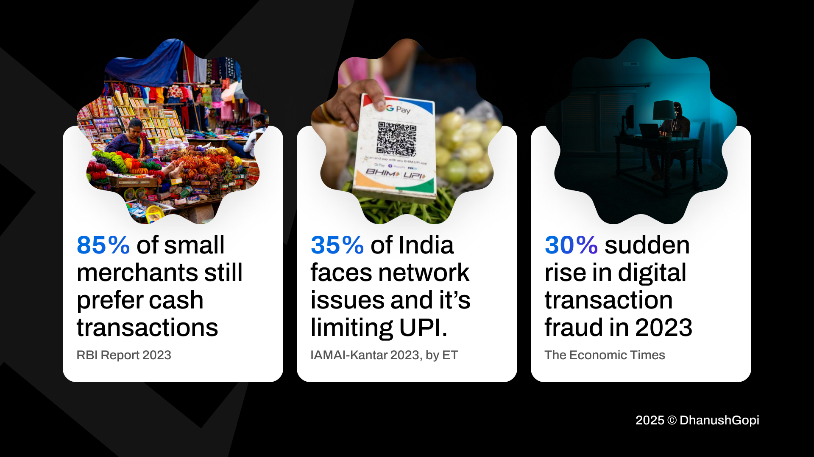
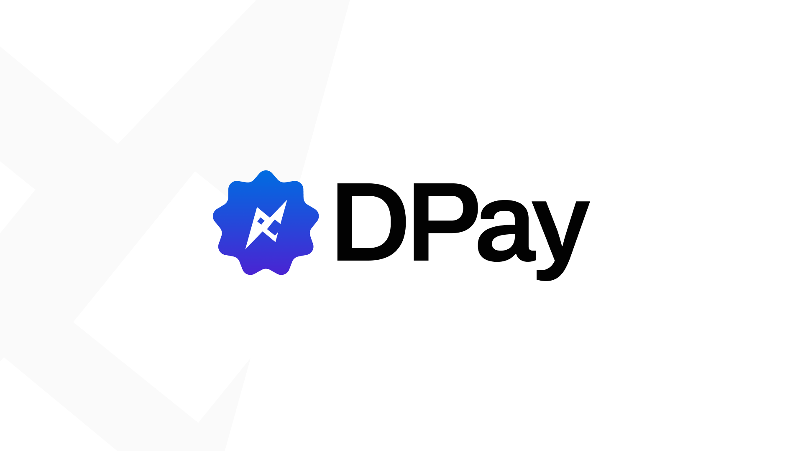
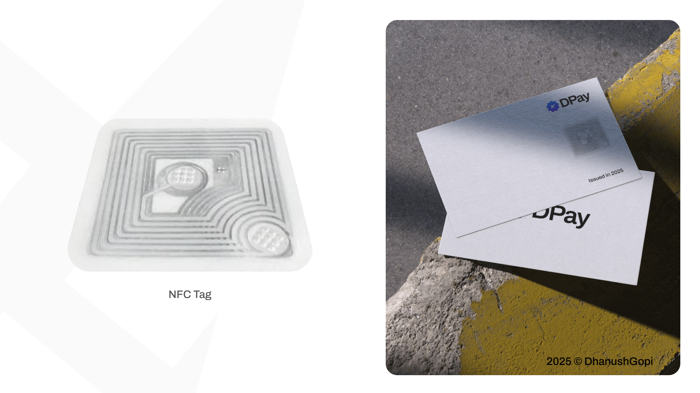
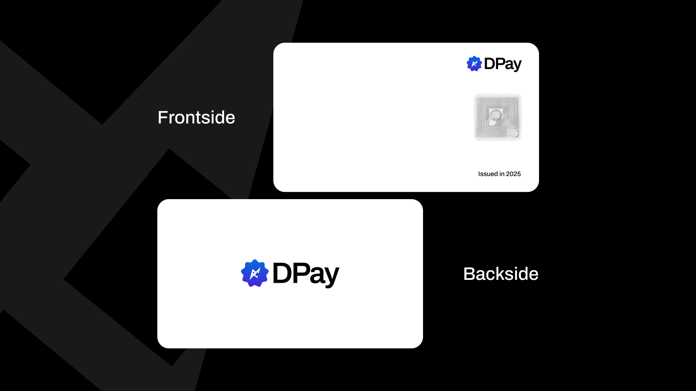
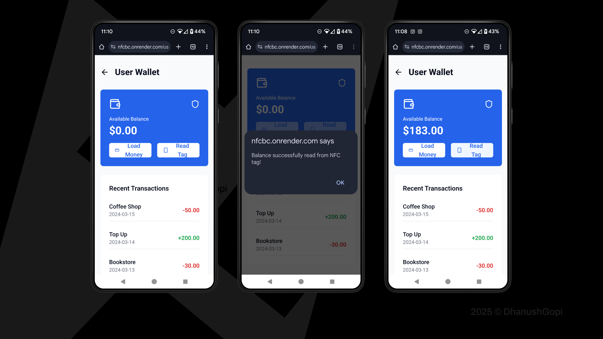
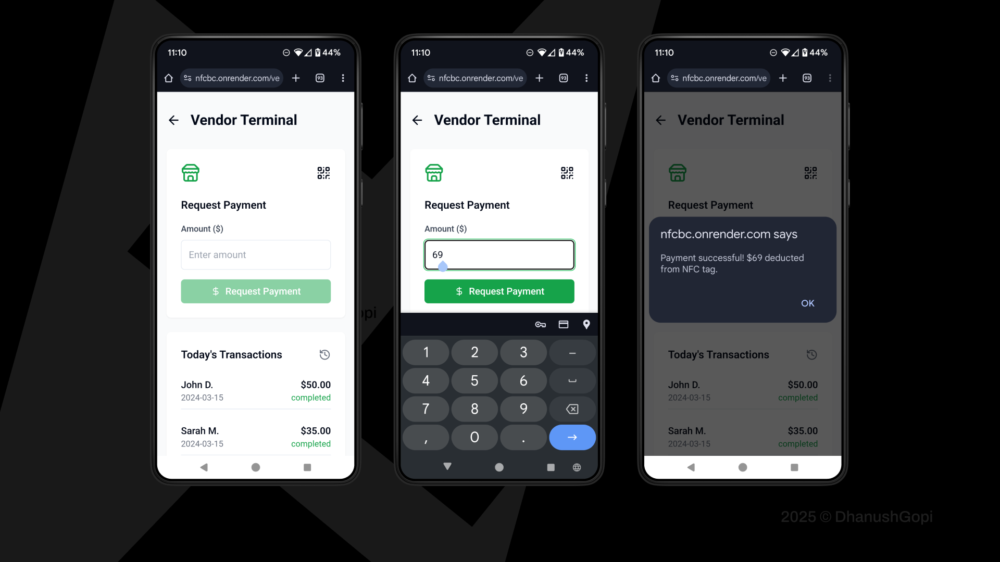

The Nerve-Wracking 3 Seconds
Author DhanushGopi
Feburary 2025
Introduction
Have you ever had a nerve-wracking three seconds during an online payment? That dhik-dhik moment when you scan a QR code, enter the amount, hit pay, and then—silence. You stare at the screen, praying the transaction goes through. But suddenly, it stretches to five seconds. Panic creeps in.
What if the transaction fails? What if you don’t have cash to cover it? You start waving your phone around, searching for a better network signal, hoping for a miracle. Then, payment failed. Now, you’re stuck in that awkward moment with the shopkeeper.
Sound familiar?
Well, I’ve been there. And I bet you have, too.
This embarrassing moment led me to dig deeper. I wanted to understand why this keeps happening and if there’s a better way. And what I found changed everything.

Cash payments are completely offline. Digital transactions, on the other hand, are entirely online. But what if we could introduce a third category—a secure, offline digital payment system?
That’s when we asked ourselves: Can we create a decentralized offline payment method that eliminates network dependency and transaction failures?
And thus, DPay was born.

What is Dpay
A blockchain powered NFC payment system enabling users to load digital cash onto NFC tags/cards, to make offline payments, and sync transactions to the blockchain when online for security, fraud prevention, and double-spending protection.
Imagine walking into a store, tapping your DPay NFC card, and completing the transaction—instantly. No network issues. No delays. No awkward moments.

User Wallet (DPay App)
Loads money onto an NFC tag from the mobile app. Uses AES-256 encryption for secure digital cash storage. Requires PIN/biometric authentication for payments.
Merchant Device (DPay Reader)
Reads the NFC tag and fetches the stored balance. Deducts the amount after user authentication. Stores transaction data locally and syncs it to the blockchain when online.
Realtime impact
Financial Inclusion, Empowers cash-dependent rural areas & unbanked populations.
UPI Alternative, Enables transactions in low-connectivity zones.
Fraud Prevention, Blockchain ensures a tamper-proof transaction history.
Faster Payments, No dependency on banks or third-party approvals.
I presented DPay at the Paper Pinnacle event held at Guru Nanak College during JUNO 2K25 and emerged as the winner. It was an incredible opportunity to showcase my ideas, compete with talented minds, and gain valuable insights from the event
Conclusion: The Future of Payments
DPay is more than just a payment method—it’s a solution to a real-world problem faced by millions in India. By eliminating network dependency and ensuring seamless, instant transactions, DPay bridges the gap between cash and digital payments.
We’re not just building a product. We’re building a movement.